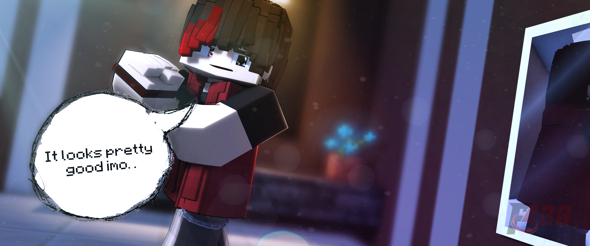

= My OC =
Name: Zack Almond Reynalds
Age: 19
Powers: Plasma/Energy
Weapon: Fire Spear
Info:
Zack is a serious person in general but always stays on his toes. When he is around his friends, he becomes a chill and approachable individual, often smiling.
= Power List =
- Plasma Balls: Small, explosive projectiles.
- Plasma Beams: Concentrated energy blasts for long-range attacks.
- Energy Dash: A short burst of speed to close gaps or dodge attacks.
- Energy Barriers: Protective walls of plasma energy.
- Energy Spikes: Ground-based plasma spikes for area control.
- Energy Shields: A portable shield for blocking attacks.
- Energy Weapons: Constructs weapons out of plasma energy.
- Teleport: Short-distance instant movement (consumes more energy than Energy Dash).
= Character's Disadvantages =
Human Durability:
Zack’s durability is limited by his human nature.
- He can strengthen his fists using energy to block attacks, stop swords, or absorb explosions.
- This ability works only when his fists are glowing, as it consumes energy to invigorate his body.
Anger Issues:
- Zack gets angry easily, which makes him explosive and prone to losing control.
- In this state, he becomes vulnerable to severe attacks due to carelessness but also gains a temporary edge by using 100% of his strength without restraint.
Low Stamina:
- Zack tires quickly when using large amounts of power in a short time.
- Excessive power usage can leave him exhausted and cause him to lose his senses.
= Character's Advantages =
Keen Alertness:
- Zack is always vigilant, making it hard to take him by surprise.
- His instincts help him dodge attacks effectively.
Destructive Power:
- His plasma energy is incredibly destructive but must be used wisely to avoid collateral damage or overexertion.
Enhanced Strength and Speed:
- Zack is stronger and faster than a normal human, though still limited by human constraints.
Transformations:
- Zack has three forms, each with unique abilities and strengths:
- Full Power Form: Maximum control and efficiency over his powers.
- Dark Form: Raw destructive force with less precision.
- Corrupted Form: An unstable and chaotic state where his powers act unpredictably.
Additional Notes:
- Zack's abilities rely heavily on energy management. Overusing his energy can leave him vulnerable.
- His personality and combat style are influenced by his mood, making battles dynamic and unpredictable.
Version Details:
- Private Version: 2.5.6 (latest update, ready for private sharing).
- Newest Version: V5 (unreleased).
- WARNING: Rig files are only available via direct messages (DM).